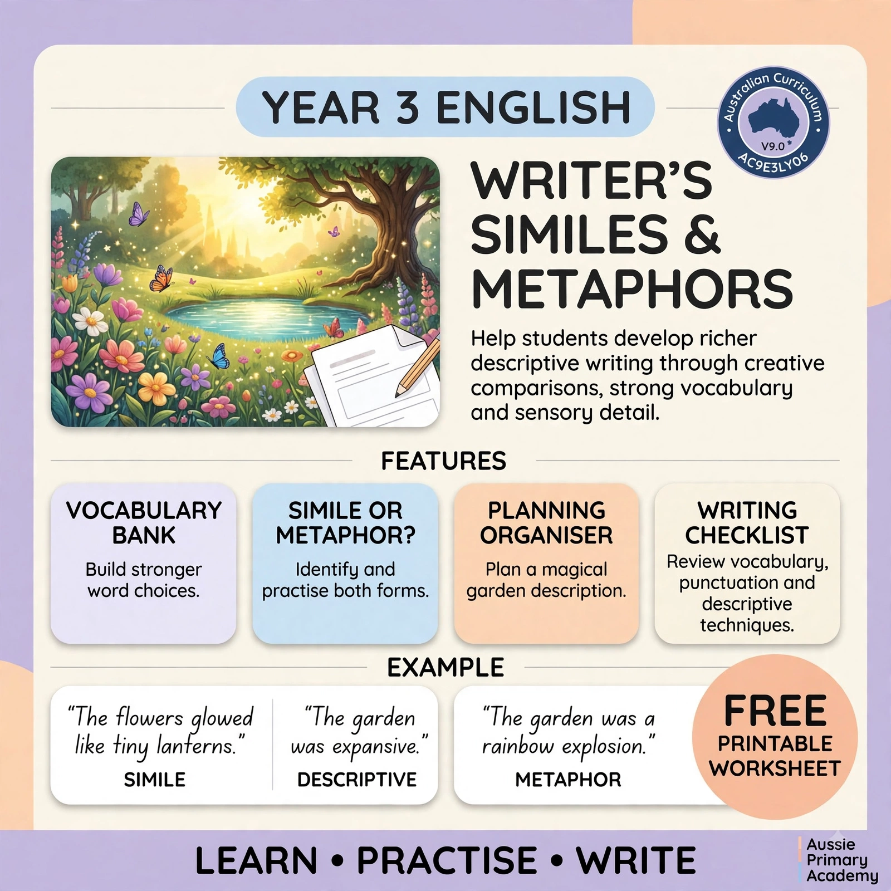

Year 3 · English
Similes vs Metaphors: Year 3 Guide with Free Worksheet
"The flowers glowed like tiny lanterns" or "the garden was a rainbow explosion" — both are descriptive, but they're not the same thing. Here's how to help your Year 3 writer tell them apart, plus a free worksheet to practise.

In this guide: Simile vs metaphor, explained simply · Real examples from a Year 3 worksheet · Why this matters for writing (and NAPLAN) · Quick practice ideas for home · Free printable worksheet · Book recommendations · FAQs
Simile vs Metaphor: What's the Difference?
Both similes and metaphors are ways of comparing two things to make writing more vivid. The difference comes down to one small detail — whether the sentence uses "like" or "as".
A simile compares two things using "like" or "as": "The flowers glowed like tiny lanterns."
A metaphor says one thing simply IS another, no "like" or "as" needed: "The garden was a rainbow explosion."
And then there's plain description, which is accurate but flat: "The garden was expansive." All three sentences describe a garden — but only two of them help a reader actually picture it.
💡 Quick tip: Similes commonly use words such as "like" or "as" — but remember, the sentence must actually compare two things. "I like apples" has the word "like", but it's not a simile because it doesn't compare two different things.
Why This Matters for Year 3 Writing
It's not just a grammar rule — it changes how a story feels to read.
Under the Australian Curriculum (Version 9.0), Year 3 students work on planning, creating and delivering texts for different purposes and audiences (AC9E3LY06). Similes and metaphors are one of the simplest tools for lifting a piece of writing from "correct" to genuinely engaging.
It also matters for NAPLAN writing tasks, where markers are specifically looking for vocabulary choices and figurative language that go beyond the basics — not just correct spelling and punctuation. Teachers looking for more Year 3 English worksheets can explore our free printable resources.
Activity: Translate These Metaphors
Being able to explain what a metaphor means is a key skill.
Ask your child: "What does this metaphor really mean?"
| Metaphor | What It Really Means |
|---|---|
| "He has a heart of gold." | He is kind and generous. |
| "The world is a stage." | Everyone plays a role in life. |
| "Her voice is music to my ears." | Her voice sounds beautiful. |
This pushes students beyond identification into genuine interpretation — a skill that makes a real difference in writing and reading comprehension.
Quick Practice Ideas for Home
No worksheet needed for these — just a few minutes of conversation.
1. Describe It Three Ways
Pick an everyday object — the sky, a dog, dinner — and ask your child to describe it plainly, then as a simile, then as a metaphor. It turns the concept into a quick game rather than a lesson.
2. Spot Them While Reading
Picture books and early chapter books are full of similes and metaphors. Pause when you spot one and ask, "Is that a simile or a metaphor? How do you know?"
3. Build a Simple Vocabulary Bank
Keep a running list of strong adjectives and comparison words your child likes — "shimmering", "towering", "as bright as" — to draw on next time they write.
Or work through it together using our free Descriptive Writing worksheet page (PDF download included).
Free Worksheet: My Magical Garden
Our Descriptive Writing – My Magical Garden worksheet gives Year 3 students a hands-on way to practise everything in this guide. It includes:
- A vocabulary bank to build stronger word choices
- A "simile or metaphor?" identification activity
- A planning organiser for describing a magical garden
- A writing checklist covering vocabulary, punctuation and descriptive technique
Free to download, ACARA v9.0 aligned (AC9E3LY06), answer key included. You can also open the full worksheet page: Descriptive Writing – My Magical Garden.
📚 Books to Explore Together
Reading picture books that use similes and metaphors is a wonderful way to see how these devices work in real stories.
Note: These are suggestions only, not endorsements. Always check with your local library or bookstore for availability.
- My Dog Is as Smelly as Dirty Socks by Hanoch Piven — Funny, visual, and perfect for reluctant readers. Kids can try creating their own family portraits using objects.
- Crazy Like a Fox: A Simile Story by Loreen Leedy — A story built around similes, with a guessing game element that keeps readers engaged.
- Skin Like Milk, Hair of Silk by Brian P. Cleary — Uses clever rhymes and humorous illustrations to explain similes and metaphors clearly.
- The Elephant by Peter Carnavas — A gentle Australian story that uses a metaphor (an elephant representing sadness) to explore feelings.
Reading these together and hunting for similes and metaphors turns learning into a fun game!
Common Mix-Ups to Watch For
These come up again and again — they're normal, not a sign of struggling.
Thinking every comparison is a simile. "The pillow is soft like a cloud" is a simile. "The pillow is soft" is just a description — there's no second thing being compared. The comparison needs two genuinely different things.
"I like apples" is not a simile. This is one of the most frequent mistakes! A simile isn't any sentence with "like" or "as" — it must compare two different things. "I like apples" expresses a preference, not a comparison. Compare it to a real simile like "her smile is like sunshine" to show the difference.
Forgetting "like" or "as" turns a metaphor into a simile. If a child isn't sure which one they've written, ask them to check for "like" or "as" first — it's the fastest way to tell the two apart.
Taking a metaphor too literally. A child reading "the lake was a mirror" and asking "but lakes aren't made of glass?" isn't being difficult — it's a normal comprehension step on the way to understanding figurative meaning, and just needs a bit more modelling.
More Ways to Build This Into Everyday Life
Small, casual moments do more than a formal lesson.
- Drop one into conversation: "You're as fast as a cheetah today!" — kids pick up the pattern faster from hearing it used naturally than from a definition
- Pause during story time: when a picture book uses a simile or metaphor, stop and ask "is that a simile or a metaphor? How do you know?"
- "Complete the simile" game: "As quiet as a ___", "As brave as a ___" — quick, fun, and works anywhere
- Ask what a metaphor means: "My tummy is a washing machine" — ask your child to explain it in their own words before moving on
- After the worksheet: ask your child to write two similes about themselves — it turns practice into something personal
Related Worksheets
Free printable Year 3 English resources that pair well with this guide.
-
Year 3 · English
Descriptive Writing
My Magical Garden
Practise similes, metaphors and vivid description with a vocabulary bank and writing checklist.
Download Free Worksheet → -
Year 3 · English
Grammar
Adjectives & Expanded Noun Phrases
Build stronger noun groups to make descriptions more precise and engaging.
Download Free Worksheet → -
Year 3 · English
Narrative Writing
The Mysterious Door
Plan and write a narrative using strong characters, setting and plot.
Download Free Worksheet → -
Year 3 · English
Persuasive Writing
Why Dogs Make the Best Pets
Build a clear opinion with organised reasons and persuasive language.
Download Free Worksheet →
Explore More
Jump straight to the matching year hub, subject library or more guides.
-
Year 3 · English
Explore Year 3 English
Grammar, reading, writing and more free printable Year 3 English resources.
Year 3 English Hub → -
All Years · English
Explore English Worksheets
Browse the complete English collection across Foundation to Year 6.
English Subject Hub → -
Blog · Guides
More English Guides
Practical teaching and parent guides with free printable links.
All Blog Guides →
You May Also Like
Related guides for Australian primary families and teachers.
-
Year 3 · Maths
Maths · Skills Guide
Best Year 3 Maths Worksheets for Australian Students
Place value, fractions, multiplication, money and measurement with free printable worksheets.
Read the Guide → -
Year 6 · English
Writing · Genres
Year 6 Writing: Narrative, Persuasive, Informative & Recount
Explore the four essential Year 6 writing genres and why practice across text types matters.
Read the Guide → -
F–6 · Reading
Reading Skills Guide
How to Improve Your Child’s Reading Skills at Home
Simple strategies for reading confidence, vocabulary and comprehension from Foundation to Year 6.
Read the Guide →
Frequently Asked Questions
What is the difference between a simile and a metaphor?
A simile compares two things using "like" or "as" — for example, "the flowers glowed like tiny lanterns". A metaphor says one thing IS another, with no "like" or "as" — for example, "the garden was a rainbow explosion".
When do Australian students learn similes and metaphors?
Under the Australian Curriculum (Version 9.0), figurative language such as similes and metaphors is introduced around Year 3, as part of building more descriptive, engaging writing.
Why do similes and metaphors matter for writing?
They help students move beyond plain description ("the garden was big") towards vivid, sensory writing that paints a picture for the reader, which is a key skill assessed in NAPLAN writing tasks.
My child says "I like apples" is a simile. How do I fix this?
This is a very common mix-up! Explain that a simile isn't any sentence with "like" or "as" — it must compare two different things. "I like apples" expresses a preference, not a comparison. Compare it to a real simile like "her smile is like sunshine" to show the difference.
Is the Descriptive Writing worksheet free?
Yes. The My Magical Garden Descriptive Writing worksheet from Aussie Primary Academy is free to download as a printable PDF, with an answer key included.
What are some good books to help teach similes and metaphors?
Picture books like My Dog Is as Smelly as Dirty Socks by Hanoch Piven, Crazy Like a Fox by Loreen Leedy, and The Elephant by Peter Carnavas are great starting points. Read them together and hunt for similes and metaphors.
Keep Learning
Explore more free Australian primary worksheets, activities and teacher resources aligned to the Australian Curriculum.